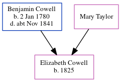

Benjamin Cowell 1825 - c1862
[ Home ] | [ Calendar ] | [ Surnames Index ] | [ Errors ] | [ Family History ]A mariner and the child of Benjamin Cowell and Mary Taylor, Benjamin Cowell, the first cousin four-times-removed on the mother's side of Nigel Horne, was born in Ramsgate, Kent, England in 18251 and married Sarah Ewen (a needlewoman with whom he had 3 children: Benjamin William, George Henry and John Charles) at St George's Church in Ramsgate on 26 Jul 18571.
He died c. Nov 1862 in Thanet, Kent, England2 and was buried at St George's Church in Ramsgate on 8 Nov 18623,4.
Parents
- Benjamin was born on 2 Jan 1780
Children
- Benjamin William was born c. Nov 1858
- George Henry was born on 25 Aug 1860
- John Charles was born on 10 May 1862
Citations
- Kent, Canterbury Archdeaconry marriages 1538-1928 - Findmypast
- England & Wales deaths 1837-2007 - Findmypast
- Kent, Canterbury Archdeaconry burials 1538-1988 - Findmypast
- Kent Burials - Findmypast
Media
Kent, Canterbury Archdeaconry burials 1538-1988 - GBPRS/CANT/D/95515330
England & Wales deaths 1837-2007 - BMD/D/1862/4/AH/000606/003
Kent, Canterbury Archdeaconry marriages 1538-1928 - GBPRS/CANT/M/97005490/1
England & Wales marriages 1837-2008 - BMD/M/1857/3/AM/000426/022
England Marriages 1538-1973 - R_848240186
Kent Burials - GBPRS/CANT/D/95522942
Family Tree
Map
Generated by ged2site. Last updated on Jul 3, 2024